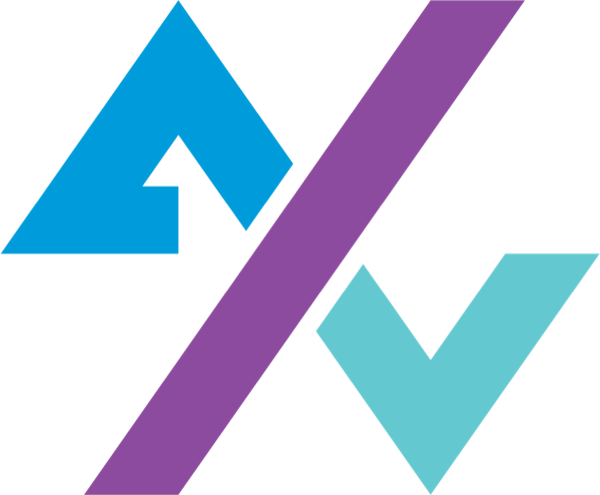

DRY, def, parametr va return, standart qiymat, dict bilan DRY
9-sinfAdvanced Back-end va DevOps6-hafta · 16-darsTakrorlama
Funksiya yozish
if/elif o'rniga
Lug'atdan kalit orqali qiymat qanday olinadi?
get().Takrorlama
# DRY emas: bir xil formula 3 marta
a = 200 - 200 * 10 / 100
b = 500 - 500 * 20 / 100
c = 90 - 90 * 5 / 100
# DRY: formula bitta joyda
def chegirma(narx, foiz):
return narx - narx * foiz / 100
print(chegirma(200, 10)) # 180.0
print(chegirma(500, 20)) # 400.0
print(chegirma(90, 5)) # 85.5
DRY nimani anglatadi?
Funksiya yozish
def salom_ber():
print("Salom, Python!")
def salom(ism="Mehmon"):
return f"Salom, {ism}!"
def yigindi(a, b):
return a + b
salom_ber() # Salom, Python!
print(salom()) # Salom, Mehmon!
print(salom("Ali")) # Salom, Ali!
natija = yigindi(3, 4) * 2
print(natija) # 14
print qilsangiz, uni keyin hisobda ishlata olmaysiz: yigindi(3, 4) * 2 ishlashi uchun return kerak.return bo'lmagan funksiya nimani qaytaradi?
None.if/elif o'rniga
texts = {
"uz": "Assalomu alaykum!",
"ru": "Zdravstvuyte!",
"en": "Hello!",
}
def salomlash(til):
return texts.get(til, texts["en"])
def chegara(sonlar):
return min(sonlar), max(sonlar)
print(salomlash("uz")) # Assalomu alaykum!
print(salomlash("de")) # Hello! (topilmadi, standart)
kichik, katta = chegara([4, 9, 1, 7])
print(kichik, katta) # 1 9
texts["de"] KeyError beradi, texts.get("de", ...) esa standart qiymat qaytaradi.Uzun if/elif o'rniga qaysi tuzilma qulay?
Hisob uchun return, ko'rsatish uchun print.
Kodni takrorlamaslik prinsipi
Funksiya e'lon qilish kalit so'zi
E'londagi nom: def f(a, b)
Chaqirishdagi qiymat: f(3, 4)
Bir xil kod.
Parametr va return.
Turli argument bilan.
| Qism | Misol | Vazifa |
|---|---|---|
def | def chegirma(...) | E'lon boshlanishi |
| Parametr | narx, foiz | Kiruvchi nom |
| Tana | 4 bo'shliq surilgan | Ish bajariladi |
return | return narx - ... | Natija qaytadi |
| Chaqirish | chegirma(200, 10) | Funksiyani ishlatish |
Pastga bosing: funksiya qismlari
chegirma(narx, foiz) funksiyasiga aylantiring.
def kvadrat(x):
print(x * x)
natija = kvadrat(4) + 1
def kvadrat(x):
return x * x
natija = kvadrat(4) + 1
Kichik, aniq nomli funksiyalar yozing.
yigindi(a, b) yozing.salom(ism) yozing.chegirma(narx, foiz) funksiyasini yozing va 3 marta chaqiring.Takrorlama — bug manbai.
Parametr, argument, natija.
if/elif o'rniga lug'at.
Uyga vazifa: DRY va funksiyalar: chegirma, salomlashuv.
Xatolarni boshqarish
6-hafta · 17-dars